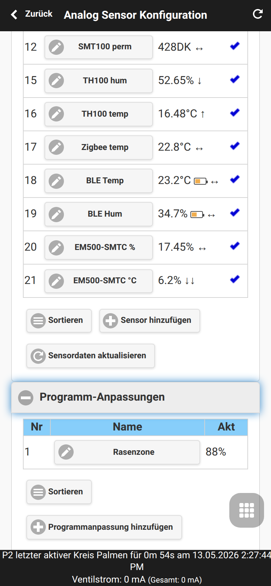
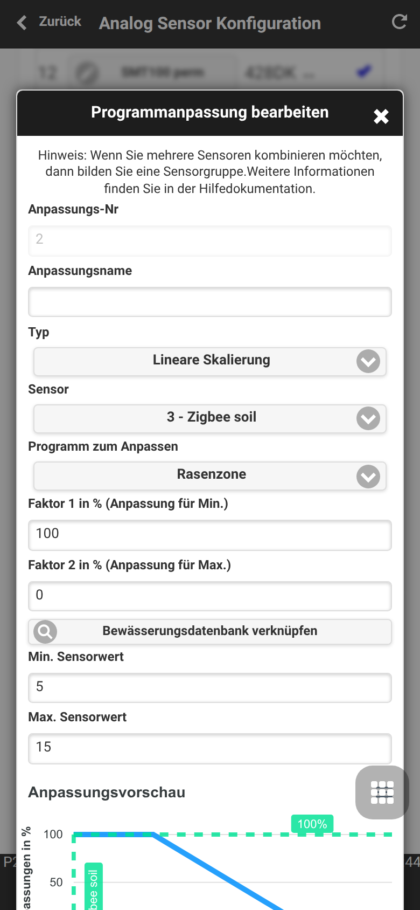
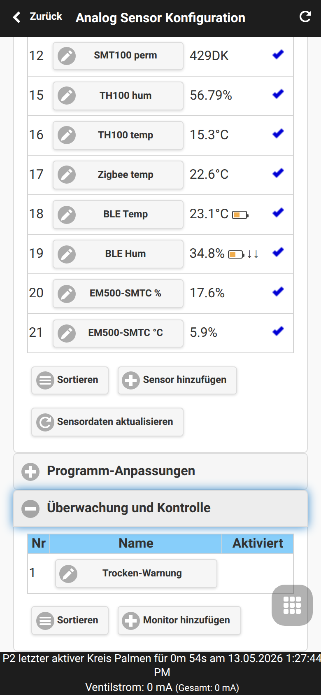
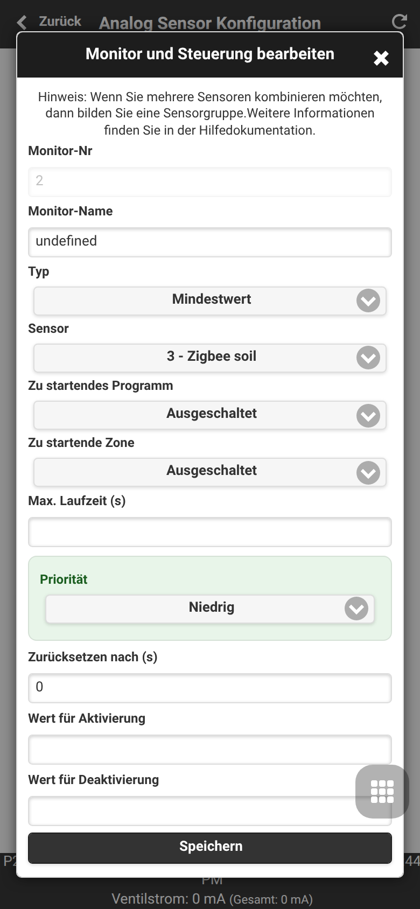

Sensor-Automation und Monitore
OpenSprinklerPro kombiniert Sensoren, Programm-Anpassungen und Monitore. Der vollständige UI-Ablauf ist unter Analog Sensor Konfiguration dokumentiert; diese Seite konzentriert sich auf das Automationsmodell und MCP/API-Tools wie configure_adjustment und configure_monitor.
Sensorbasierte Programm-Anpassungen
Programm-Anpassungen skalieren Bewässerungsdauer anhand aktueller Sensorwerte.
| Typ | Verhalten |
|---|---|
LINEAR |
Sensor-Min/Max linear auf Faktor 1/Faktor 2 abbilden |
DIGITAL_MIN |
Faktor 1 verwenden, wenn der Sensorwert unter/gleich Minimum ist |
DIGITAL_MAX |
Faktor 2 verwenden, wenn der Sensorwert über/gleich Maximum ist |
DIGITAL_MINMAX |
Außerhalb des Min/Max-Fensters auslösen |


Monitore
Monitore überwachen Sensorwerte oder logische Bedingungen und erzeugen lokale Warnungen oder Automations-Trigger. Sie können außerdem Benachrichtigungsereignisse speisen.
| Monitortyp | Zweck |
|---|---|
| MIN / MAX | Schwellwertprüfung |
| SENSOR12 / SET_SENSOR12 | Digitale Regen-/Bodensensorintegration |
| AND / OR / XOR / NOT | Logik auf Basis anderer Monitore |
| TIME | Zeitfenster-Bedingung |
| REMOTE | Monitorzustand eines anderen OpenSprinkler |

